surf_collide command¶
Syntax:
surf_collide ID style args keyword values ...
ID = user-assigned name for the surface collision model
style = specular or diffuse or cll or impulsive or td or piston or transparent or vanish or specular/kk or diffuse/kk or piston/kk or vanish/kk
args = arguments for specific style
specular or specular/kk args = none diffuse or diffuse/kk args = Tsurf acc Tsurf = temperature of surface (temperature units) Tsurf can be a variable (see below) acc = accommodation coefficient cll args = Tsurf acc_n acc_t acc_rot acc_vib Tsurf = temperature of surface (temperature units) Tsurf can be a variable (see below) acc_n = accommodation coefficient in the surface normal direction acc_t = accommodation coefficient in the surface tangential direction acc_rot = accommodation coefficient for the rotational modes acc_vib = accommodation coefficient for the vibrational modes impulsive args = Tsurf model param1 param2 var theta_peak pol_pow azi_pow Tsurf = temperature of surface (temperature units) Tsurf can be a variable (see below) model can be softsphere or tempvar softsphere args = en_ratio eff_mass param1 = en_ratio = fraction of energy lost in the collision param2 = eff_mass = effective mass of the surface atom tempvar args = a1 a0 param1 = a1 = linear term in the variation with temperature param2 = a0 = constant term in the variation with temperature var = variance of the scattered particle velocity distribution theta_peak = peak location of the polar angle distribution pol_pow = cosine power represeting the polar angular distribution azi_pow = cosine power represeting the azimuthal angular distribution td arg = Tsurf Tsurf = temperature of surface (temperature units) Tsurf can be a variable (see below) piston or piston/kk args = Vwall Vwall = velocity of boundary wall (velocity units) transparent args = none
vanish or vanish/kk args = none
zero or more keyword/arg pairs may be appended
keyword = translate or rotate or partial
values = values for specific keyword
translate args = Vx Vy Vz Vx,Vy,Vz = translational velocity of surface (velocity units) rotate args = Pz Py Pz Wx Wy Wz Px,Py,Pz = point to rotate surface around (distance units) Wx,Wy,Wz = angular velocity of surface around point (radians/time) partial args = eccen (only for cll style) eccen = eccentricity parameter barrier args = bar_val (only for td style) bar_val = value of the desorption barrier in temperature units bond args = bond_trans bond_rot bond_vib (only for td style) bond_trans = amount of bond dissociation energy (in temperature units) going into translational mode bond_rot = amount of bond dissociation energy (in temperature units) going into rotational mode bond_vib = amount of bond dissociation energy (in temperature units) going into vibrational mode init_energy = IE_trans IE_rot IE_vib (only for td style) IE_trans = fraction of initial translational energy going into translational mode IE_rot = fraction of initial translational energy going into rotational mode IE_vib = fraction of initial translational energy going into vibrational mode step args = epsilon (only for impulsive style) epsilon = ratio of the height to the width of the step double args = polar_pow_2 (only for impulsive style) polar_pow_2 = cosine power for the polar angular distribution between peak and surface intenergy args = frac_rot frac_vib (only for impulsive style) frac_rot = fraction of lost translational energy going into the rotational mode frac_vib = fraction of lost translational energy going into the vibrational mode
Examples:
surf_collide 1 specular
surf_collide 1 transparent
surf_collide 1 diffuse 273.15 0.9
surf_collide 1 cll 273.15 0.8 0.8 0.5 0.1
surf_collide 1 cll 273.15 1.0 1.0 0.1 0.1 partial 0.5
surf_collide 1 impulsive 1000.0 softsphere 0.2 50 2000 60 5 75
surf_collide 1 impulsive 1000.0 tempvar 3 500 2000 60 5 75
surf_collide 1 impulsive 1000.0 softsphere 0.2 50 2000 60 5 75 double 10
surf_collide 1 impulsive 1000.0 tempvar 3 500 2000 60 5 75 step 0.1
surf_collide heatwall diffuse v_ramp 0.8
surf_collide heatwall diffuse v_ramp 0.8 translate 5.0 0.0 0.0
Description:
Define a model for particle-surface collisions. One or more models can be defined and assigned to different surfaces or simulation box boundaries via the surf_modify command or bound_modify command. See Details of surfaces in SPARTA for more details of how SPARTA defines surfaces as collections of geometric elements, triangles in 3d and line segments in 2d. Chemical reactions can also be part of a particle-surface interaction model. See the surf_react command for details. All of the collision styles listed here support optional reactions, except the vanish style.
The ID for a surface collision model is used to identify it in other commands. Each surface collision model ID must be unique. The ID can only contain alphanumeric characters and underscores.
The specular style computes a simple specular reflection model. It requires no arguments. Specular reflection means that a particle reflects off a surface element with its incident velocity vector reversed with respect to the outward normal of the surface element. The particle’s speed is unchanged.
The diffuse style computes a simple diffusive reflection model.
The model has 2 parameters set by the Tsurf and acc arguments. Tsurf is the temperature of the surface. Acc is an accommodation coefficient from 0.0 to 1.0, which determines what fraction of surface collisions are specular. The rest are diffusive. Thus a setting of acc = 0.0 means all collisions are specular.
Note that setting acc = 0.0, is a way to perform surface reactions
with specular reflection, via the surf_react command, which
cannot be done in conjunction with the surf_collide specular
command. See the surf_react command doc page for details.
Diffuse reflection emits the particle from the surface with no dependence on its incident velocity. A new velocity is assigned to the particle, sampled from a Gaussian distribution consistent with the surface temperature. The new velocity will have thermal components in the direction of the outward surface normal and the plane tangent to the surface given by:
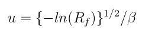
The Tsurf value can be specified as an equal-style. If the value is a variable, it should be
specified as v_name, where name is the variable name. In this case,
the variable will be evaluated each timestep, and its value used to
determine the current surface temperature.
Equal-style variables can specify formulas with various mathematical functions, and include stats_style command keywords for the simulation box parameters and timestep and elapsed time. Thus it is easy to specify a time-dependent temperature.
The cll style computes the surface collision model proposed by Cercignani, Lampis and Lord. The model has 5 parameters set by the Tsurf, acc_n, acc_t, acc_rot, and acc_vib arguments. Tsurf is the temperature of the surface. acc_n, acc_t, acc_rot, and acc_vib are the accommodation coefficient for the surface normal direction, surface tangential directions, rotational energy mode, and vibrational energy mode respectively. The rotational and vibrational energy accommodation values must be specified even for an atomic species; however these values are simply ignored.
The theoretical scattering kernel was proposed by Cercignani and Lampis (Cercignani71). In this original model, two accommodation coefficients for the normal and tangential directions are employed. Each of these quantities can take a value between 0 and 1. Specular reflection is achieved by using the values (0,0), while complete thermal accommodation with the surface and cosine angular distributions is obtained using (1,1). There is smooth variation of both the energy and angular distribution for values in between these limits leading to lobular distributions similar to those observed in experiments. The implementation details of this model within DSMC was given by Lord (Lord90), along with extension to rotational and vibrational modes with both continuous and discrete levels (Lord91).
The Tsurf value can be specified as an equal-style variable. If the value is a variable, it should be specified as v_name, where name is the variable name. In this case, the variable will be evaluated each timestep, and its value used to determine the current surface temperature.
Equal-style variables can specify formulas with various mathematical functions and include stats_style command keywords for the simulation box parameters and timestep and elapsed time. Thus, it is easy to specify a time-dependent temperature.
The td style computes the thermal desorption surface collision model proposed by Swaminathan Gopalan et al. [SG18]. The model has 1 parameter set by Tsurf argument, which is the temperature of the surface. This is similar to diffuse style with an accommodation coefficient acc = 1.0.
The particles are scattered thermally based on the Maxwell Boltzmann distribution conisstent with the surface temperture. The new velocity will have thermal components in the direction of the outward surface normal and the plane tangent to the surface given by:
The Tsurf value can be specified as an equal-style variable. If the value is a variable, it should be specified as v_name, where name is the variable name. In this case, the variable will be evaluated each timestep, and its value used to determine the current surface temperature.
Equal-style variables can specify formulas with various mathematical functions, and include stats_style command keywords for the simulation box parameters and timestep and elapsed time. Thus it is easy to specify a time-dependent temperature.
The impuslive style computes the surface collision model proposed by Swaminathan Gopalan et al. [SG18]. The model has 8 parameters. Within impulsive scattering, two different models are available, namely softsphere and tempvar. The softsphere argument uses the soft sphere model and has two parameters: en_ratio which represents the fraction of energy lost during the collision, and eff_mass specifying the effective mass of the surface atom. The tempvar argument directly provides the peak value of the scattered particle velocity distribution as a linear function of temperature. It has two parameters: the linear term a1 and constant term a0. The other five parameters Tsurf, var, pol_peak, pol_pow, azi_pow are set for both the models. Tsurf is the surface temperature. var is the variance of the scattered particle velocity distribution. pol_peak is the peak of the polar angle distribution. pol_pow and azi_pow are the cosine power representing the polar and azimuthal angle distribution respectively.
The impulsive model is used to represent the scattering of particles having super or hyperthermal translational energies and very low internal energies, like in a beam. This type of scattering falls under the structural regime, whose scattering physics and distributions are very different from the thermal regime. The velocity distribution of the impulsive scattering model can be represented using a Gaussian distribution with a mean u0 and a variance \alpha following Rettner [Rettner94a]
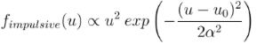
The variance parameter is directly specified by the user. The value of u0 can be provided directly using the tempvar model in which it is represented as a linear function of temperature. The linear term a1 and constant term a0 are given as inputs.
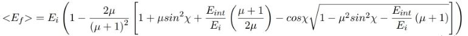
The u0 parameter can also be specified by a more physical model such as the soft sphere scattering model [Alexander12]. This model uses the parameters en_ratio, the fraction of energy lost in the collision and eff_mass, the effective mass of the surface atom to determine the average final energy and then the average final velocity u0. Within the soft sphere model, the average final velocity will vary as a function of the final polar angle.
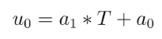
Both the polar and azimuthal angular distribution are lobular in nature and sharply peaked. These distributions can be represented using the cosine power law distribution [Glatzer97]. The peak of the azimuthal distribution remains at zero, while the peak of the polar angle distribution is usually higher than the incident angle (away from the normal). Hence the peak location (theta_peak) and cosine power (n) of the polar angle distribution and the cosine power (m) of the azimuthal angular distribution are taken as input parameters. A factor of 2 is present in the azimuthal distribution to ensure the function remians positive within the range of the azimuthal angle: (-180, 180)
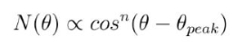
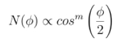
The internal (rotational and vibrational) energy of an incident molecule remains unchanged within the impulsive model unless the optional keyword intenergy is specified (see below).
The Tsurf value can be specified as an equal-style variable. If the value is a variable, it should be specified as v_name, where name is the variable name. In this case, the variable will be evaluated each timestep, and its value used to determine the current surface temperature.
Equal-style variables can specify formulas with various mathematical functions and include stats_style command keywords for the simulation box parameters and timestep and elapsed time. Thus, it is easy to specify a time-dependent temperature.
The piston style models a subsonic pressure boundary condition. It can only be assigned to the simulation box boundaries via the bound_modify command or to surface elements which are parallel to one of the box boundaries (via the surf_modify command).
It treats collisions of particles with the surface as if the surface were moving with specified velocity Vwall away from the incident particle. Thus the “collision” actually occurs later in the timestep and the reflected velocity is less than it would be for reflection from a stationary surface. This calculation is performed using equations 12.30 and 12.31 in [Bird94] to compute the reflected velocity and final position of the particle. If the particle does not return within the timestep to a position inside the simulation box (for a boundary surface) or to the same side of the initial surface that it started from (for a surface element collision), the particle is deleted. This effectively induces particles at the boundary to have a velocity distribution consistent with a subsonic pressure boundary condition, as explained in [Bird94].
Vwall should be chosen to correspond to a desired pressure condition for the density of particles in the system.
NOTE: give more details on how to do this?
Note that Vwall must always be input as a value >= 0.0, meaning the surface is moving away from the incident particle. For example, in the z-dimension, if the upper box face is assigned Vwall, it is moving upward. Similarly if the lower box face is assigned Vwall, it is moving downward.
The transparent style simply allows particles to pass through the surface without altering the particle properties.
This is useful for tallying flow statistics. The surface elements must have been flagged as transparent when they were read in, via the read_surf command and its transparent keyword. The compute surf command will tally fluxes differently for transparent surf elements. The Transparent surface elements doc page provides an overview of transparent surfaces. See those doc pages for details.
The vanish style simply deletes any particle which hits the surface.
This is useful if a surface is defined to be an inflow boundary on the simulation domain, e.g. using the fix emit/surf command. Using this surface collision model will also treat the surface as an outflow boundary. This is similar to using the fix emit/face command on a simulation box face while also setting the face to be an outflow boundary via the boundary o command.
Note that the surf_react global command can also be used to delete particles hitting a surface, by setting the pdelete parameter to 1.0. Using a surf_collide vanish command is simpler.
The keyword translate can only be applied to the diffuse and cll style. It models the surface as if it were translating with a constant velocity, specified by the vector (Vx,Vy,Vz). This velocity is added to the final post-collisional velocity of each particle that collides with the surface.
The keyword rotate can only be applied to the diffuse and cll style. It models the surface as if it were rotating with a constant angular velocity, specified by the vector W = (Wx,Wy,Wz), around the specified point P = (Px,Py,Pz). Note that W and P define the rotation axis. The magnitude of W defines the speed of rotation. I.e. if the length of W = 2*pi then the surface is rotating at one revolution per time unit, where time units are defined by the units command.
When a particle collides with the surface at a point X = (x,y,z), the collision point has a velocity given by V = (Vx,Vy,Vz) = W cross (X-P). This velocity is added to the final post-collisional velocity of the particle.
The rotate keyword can be used to treat a simulation box boundary as a rotating wall, e.g. the end cap of an axisymmetric cylinder. Or to model a rotating object consisting of surface elements, e.g. a sphere. In either case, the wall or surface elements themselves do not change position due to rotation. They are simply modeled as having a tangential velocity, as if the entire object were rotating.
Important
For both the translate and rotate keywords the added velocity can only be tangential to the surface, with no normal component since the surface is not actually moving in the normal direction. SPARTA does not check that the specified translation or rotation produces a tangential velocity. However if does enforce the condition by subtracting off any component of the added velocity that is normal to the simulation box boundary or individual surface element.
The keyword partial can only be applied to the cll style. Within the CLL model, the energy and angular distribution are linked. Lord [Lord95] proposed a way to decouple the energy accommodation from the angular distribution. This case of partially diffuse scattering with incomplete energy accommodation can be activated in SPARTA using the optional keyword partial. It requires an additional parameter eccentricity set by the eccen argument. For this case, the energy accommodation is calculated using the accommodation coefficients, but the angular distribution is computed using the additional parameter eccentricity. The eccen parameter can vary between 0 and 1. A value of 0 represents fully diffuse scattering and gives a cosine angular distribution. Increasing value of eccen presents more peaked and lobular distribution [Lord95].
The keywords barrier, bond, and initenergy can only be applied to the td style. Due to the nature of the interaction between the products and the surface, the desorption of the products might have an energy barrier. For a surface desorption process, this desorption barrier exists only in the normal direction. Thus, only the products having enough energy (in the normal direction) to overcome the barrier will be able to desorb from the surface. This alters the velocity distribution of the observed products along the surface normal direction and thus leads to the distortion of the speed distribution [Goodman72]. The angular distributions, which represent the ratio of the normal to the tangential velocities, are also altered as a result of the desorption barrier. The angular distributions are peaked more towards the normal and are often described by a cosine power law distribution.
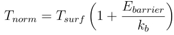
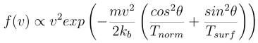
In addition to the desorption energy barrier, products formed through thermal mechanisms might have energies exceeding those corresponding to the bulk surface temperature. The energy of the local surface environment where the product formation occurs might be greater than the normal surface temperature due to the formation of local hot-spots [Rettner94b].
These hot-spots might stem from the dissociation or bond energy of the intermediates or the products. The optional keyword bond can be used to account for this scenario. This requires three arguments: the amount of energy (in temperature units) going into the translational, rotational and vibrational mode.
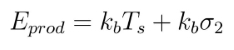
The higher energy during desorption might also arise due to the energy deposited by high speed of the incoming gas-phase particles. Since the formation of the products is rapid, the product might form and desorb before this high energy dissipates from the local hot-spots [Beckerle90]. In this case, although the products are in thermal equilibrium with the surroundings, the energies of the products might not depend only on the equilibrium surface temperature, but also on the incoming velocities of the particles. This can be used within SPARTA using the optional keyword initenergy. It requires 3 arguments: fraction of the initial translational energy going into the translational, rotational and vibrational modes.
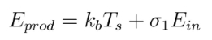
The keywords step, double, and intenergy can only be applied to the impulsive style. In some cases, it is observed that the polar angular distribution on either side of the peak is different. Goodman [Goodman74] provided a physical reasoning for the observed faster decay rate in the polar angular distribution away from the normal with the surface assumed to consist of periodic steps of average height H and average periodicity L. The ratio of the height to periodicity is epsilon and the correction to the angular distribution is given by
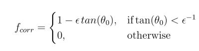
This optional argument can be accessed using the keyword step, and epsilon parameter must be specified. Another optional argument to specify the angular distribution of the products is the double keyword. In this option, the angular distribution on either sides of the peak are represented by a different cosine power decay. It requires one argument pol_pow_2, which describes the distribution between the peak and the surface. The distribution between the surface normal and the peak is described using the parameter pol_pow.
The keyword intenergy can be used to modify the internal energy of an incident molecule during collision. In the case of hyperthermal collision the energy from the translational mode is transfered to the internal modes. This keyword requires two input parameters frac_rot and frac_vib. These specify the fraction of the change in translational energy (difference between the final and initial) transferred to the rotational and vibrational mode respectively.
Output info:
All the surface collide models calculate a global vector of length 2. The values can be used by the stats_style command and by variable command that define formulas. The latter means they can be used by any command that uses a variable as input, e.g. the fix ave/time command. See :ref: Section 6.4 for an overview of SPARTA output options.
The first element of the vector is the count of particles that hit surface elements assigned to this collision model during the current timestep. The second element is the cummulative count of particles that have hit surface elements since the current run began.
Styles with a kk suffix are functionally the same as the corresponding style without the suffix. They have been optimized to run faster, depending on your available hardware, as discussed in the Accelerating SPARTA section of the manual. The accelerated styles take the same arguments and should produce the same results, except for different random number, round-off and precision issues.
These accelerated styles are part of the KOKKOS package. They are only enabled if SPARTA was built with that package. See the Making SPARTA section for more info.
You can specify the accelerated styles explicitly in your input script by including their suffix, or you can use the -suffix command-line switch when you invoke SPARTA, or you can use the suffix command in your input script.
See the Accelerating SPARTA section of the manual for more instructions on how to use the accelerated styles effectively.
Restrictions:
The translate and rotate keywords cannot be used together.
If specified with a kk suffix, this command can be used no more than twice in the same input script (active at the same time).
Related commands:
read_surf command, bound_modify command
Default: none
- Bird94(1,2)
Bird, Molecular Gas Dynamics and the Direct Simulation of Gas Flows, Clarendon Press, Oxford (1994).
- Cercignani71
Cercignani C, Lampis M, Kinetic models for gas-surface interactions, Transport theory and statistical physics, Jan (1971).
- Lord90
Lord, presented at the 17th International Symposium on Rarefied Gas Dynamics, Germany, July (1990).
- Lord91
Lord, Some extensions of the Cercignani-Lampis gas-surface interaction model, Physics of Fluids A: Fluid Dynamics, Jan (1991).
- SG18(1,2)
Swaminathan Gopalan, Development of a detailed surface chemistry framework in DSMC, AIAA Aerospace Sciences Meeting, Jan (2018).
- Rettner94a
Rettner, Reaction of an H-atom beam with Cl/Au(111): Dynamics of concurrent EleyRideal and Langmuir-Hinshelwood mechanisms, Journal of Chemical Physics, (1994).
- Alexander12
Alexander, et al, Kinematics and dynamics of atomic-beam scattering on liquid and self-assembled monolayer surfaces, Faraday discussions, (2012)
- Glatzer97
Glatzer, et al, Rotationally excited NO molecules incident on a graphite surface: in- and out-of-plane angular distributions, Surface Science, (1997)
- Lord95(1,2)
Lord, Some further extensions of the Cercignani-Lampis gas-surface interaction model, Physics of Fluids, May (1995).
- Goodman72
Goodman, Simple model for the velocity distribution of molecules desorbed from surfaces following recombination of atoms, Surface Science, (1972).
- Rettner94b
Rettner and J. Lee, Dynamic displacement of o2 from pt (111): A new desorption mechanism, The Journal of chemical physics, (1994).
- Beckerle90
Beckerle, A. Johnson, and S. Ceyer, Collision-induced desorption of physisorbed CH4 from Ni (111): Experiments and simulations, The Journal of Chemical Physics, (1990).
- Goodman74
Goodman, Determination of characteristic surface vibration temperatures by molecular beam scattering: Application to specular scattering in the H-LiF (001) system, Surface Science, (1974)